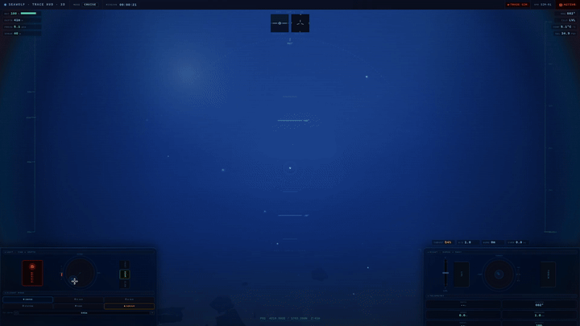
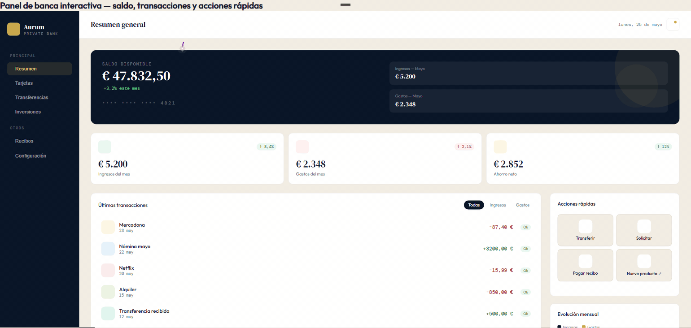
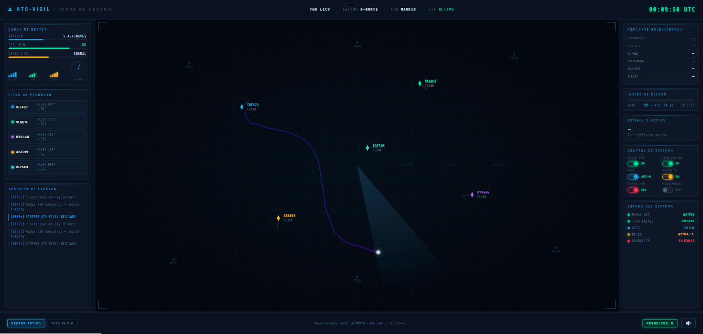
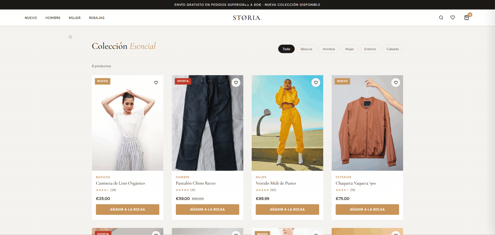

Proyecto de investigación · Telemetría conductual
Trace
Sistema de telemetría conductual para el modelado del comportamiento de usuario y la evaluación de interfaces en contextos variados. Soporta protocolos basados en tareas dirigidas a objetivos, entornos inmersivos y monitorización atencional prolongada. Captura eventos de interacción (trayectorias, gestos táctiles, tiempos de decisión) y extrae métricas compuestas sin instrumentación invasiva, sobre cualquier interfaz y sin modificar su lógica. Los protocolos pueden integrar módulos de sensores fisiológicos para enriquecer la lectura cognitiva de la interacción.



